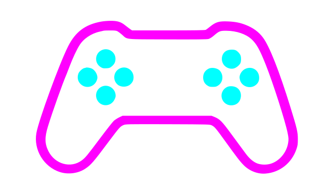
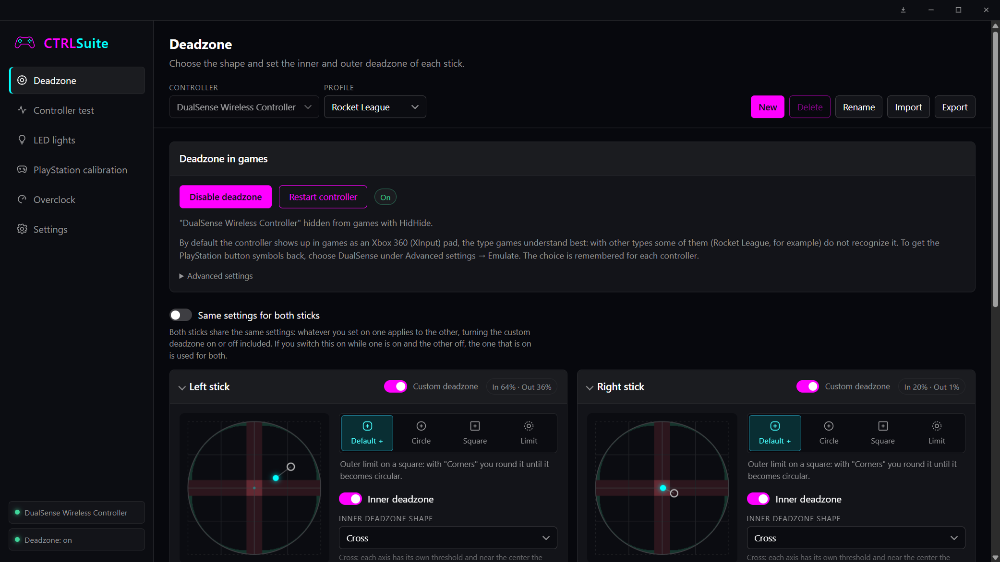
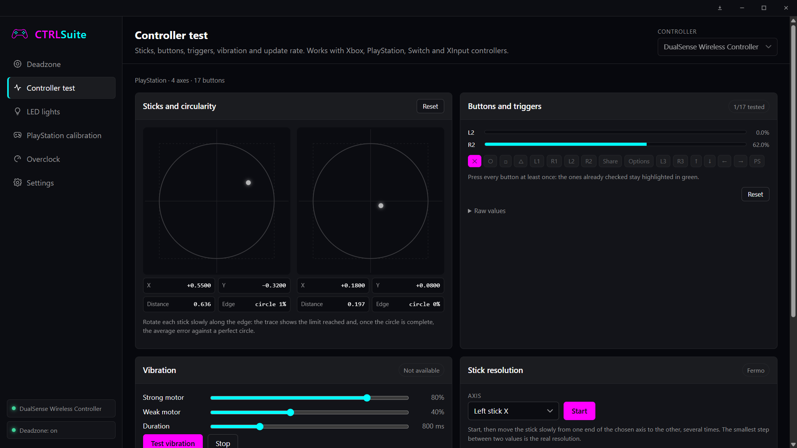
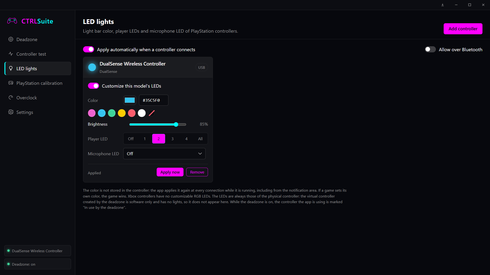
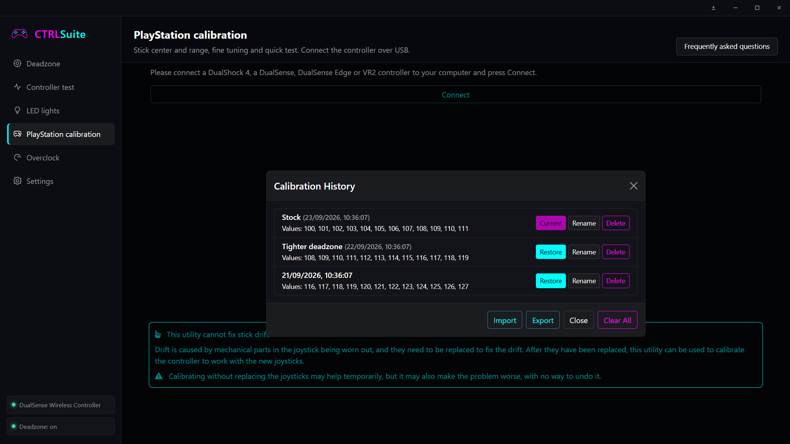
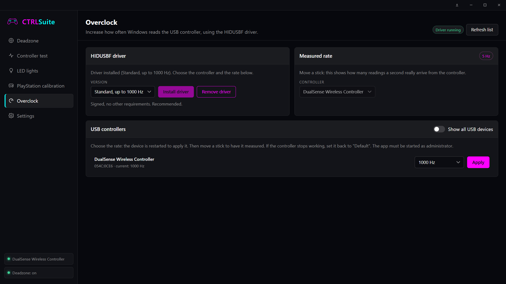
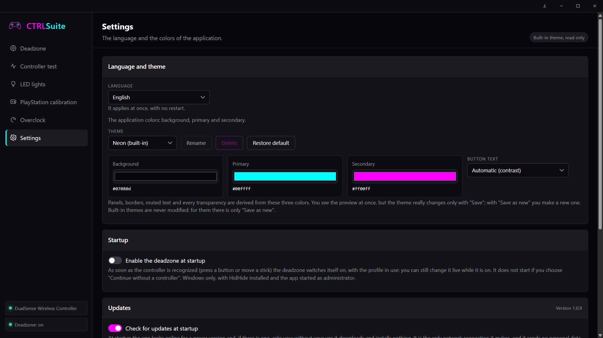

Free · for WindowsThe controller settings your games never gave you.
CTRLSuite reads your controller directly and hands games an already-corrected one: real deadzone shapes and response curves, LED colors, offline PlayStation calibration, and a faster polling rate — in one app, free, no game plugins.
Installer or zip · not code-signed yet, Windows may ask you to confirm once

It started from a single problem: deadzones in Rocket League. The game doesn't let you adjust them, and a stick with the slightest play at center turns into a car that steers on its own.
So CTRLSuite gets in between the controller and the game — reading the pad, applying the deadzone you actually want, and handing the game an already-corrected virtual controller.
Once that piece existed, the rest followed: LEDs, calibration, polling rate, button and vibration tests. One app, one place to manage your controller — whatever you want to do with it.
Six sections, one controller
Every screenshot below is the real app, reading a real DualSense.
Shape it exactly how you want
Four outer shapes — including one projected onto a square, so a full diagonal still reads 100% on both axes — an inner deadzone that's either cross-shaped or perfectly round, and a response curve: linear, exponential, sinusoidal, or drawn by hand and exported with the profile.
- Live map, adjusted with the controller in hand
- Inner and outer deadzone chosen separately
- A profile per game, switched from the tray
Know exactly what your pad is doing
Stick circularity, button and trigger readouts, motor vibration, stick resolution in bits, and the real update rate — read straight over HID on the rare occasions the deadzone would otherwise hide it from the browser.
- Works with Xbox, PlayStation, Switch and XInput pads
- Average error against a perfect circle
- Writes nothing to the controller

Your color, every time it connects
Light bar color, player LEDs, and microphone LED — for DualShock 4, DualSense and DualSense Edge. Applied automatically the moment the controller shows up, even while CTRLSuite sits in the tray.
- Picker, hex code, or one-tap presets
- Remembered per controller, reapplied automatically
- Restored after PlayStation calibration resets it

DualShock Tools, built in and offline
The full calibration suite for genuine Sony controllers — stick center and range, fine-tuning, quick test — with a history that remembers every calibration by name and never touches the network.
- DualShock 4, DualSense, DualSense Edge, PS VR2
- Warns you when the controller doesn't match its history
- Export and import a whole calibration history

Faster than Windows reads by default
Raise your controller's USB polling rate with HIDUSBF — up to 1000 Hz with the standard, signed driver, 8000 Hz with the patched one — and measure the real rate as you move the stick.
- Lists only real controllers, not every USB device
- One click applies it and restarts the device
- Measured rate, not just what was requested

Three colors, and the whole app follows
Pick a background, primary and secondary color once — every panel, switch, and even the embedded PlayStation calibration section repaints itself live, with no restart.
- Save as many themes as you like
- English and Italian, switched with no restart
- Nothing is ever lost: edits live in a draft until saved

CTRLSuite sits in between
Nothing to configure in the game — it only ever sees the corrected controller.
Connect
CTRLSuite reads your controller directly, the moment it moves or presses something.
Tune it
Deadzone shape, response curve, LEDs, polling rate — every change shows up live on the map.
Play
Games only ever see an already-corrected virtual controller. Nothing to set up on their side.
Free to download
One installer, everything included.
Installer (recommended — Start menu shortcut, updates itself) or a no-install zip. Requires administrator on first launch: the deadzone needs it.
Download the latest release